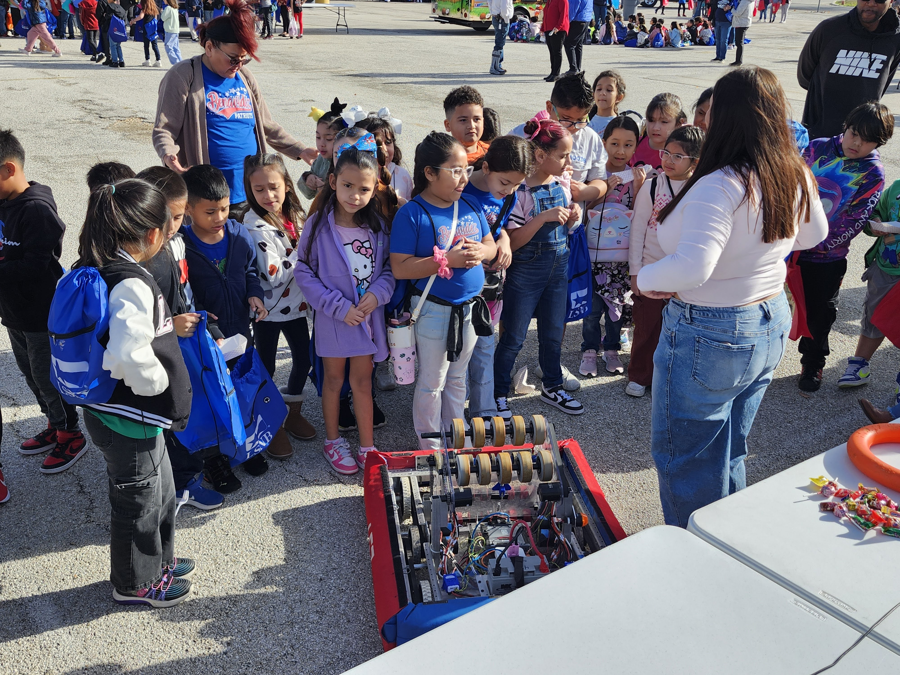
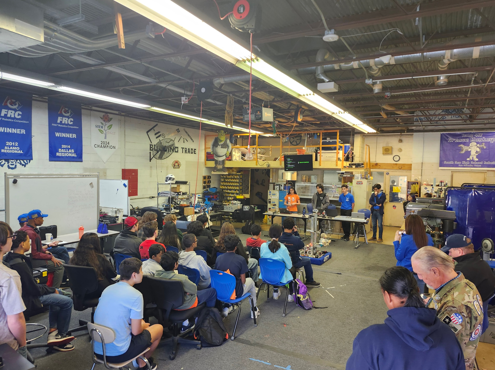

Outreach
Impacting our Community
STEM Nights
One of our main activities is promoting STEM in the South San Antonio Community. We attend and sometimes even coordinate STEM nights at all of our district elementary schools in order to showcase the opportunities our team offers and provide an entertaining and educational experience. We also attend the St. Philip's College Science Extravaganza, which gives us the opportunity to reach 5th graders from all over the South Side of San Antonio.


Hosting San Antonio Kickoff
For the past two seasons, South San Antonio High School has served as the official Kickoff location for the South Texas area and its almost 30 teams. We provided the following services this past year for the REBUILT kickoff:
- A centralized location for all teams to pick up season materials.
- A live viewing of the game release.
- A workshop for rookie teams to learn about the planning/building process.
- Co-hosted a programming workshop with other YASS (Yet Another Software Suite) founding teams 3481 Bronc Botz and 9658 Camber.
- Provided classroom workspace for teams to begin planning for the season.
Supporting Other Teams
We are fortunate to have built up our manufacturing capabilities over the years, which allows us to support other FRC teams in the San Antonio area. We regularly manufacture and finish parts for other local teams using our CNC router, CO2 laser cutter, mill, lathe, 3D printers, and powder coating equipment.
South San Antonio ISD has also graciously allowed us to use district facilities to set up a full size FRC practice field. We make this available to any team in the San Antonio area. We are committed to fostering a strong robotics community in San Antonio and South Texas, and we are proud to provide these resources to our fellow San Antonio teams.
Community Outreach
The Grease Monkeys take every opportunity to engage with the community outside of our district as well, participating in events, trade shows, and partnering with local organizations to promote STEM education and inspire the next generation of engineers and innovators. We also hope to expose team members to these businesses and create networking opportunities for them.
Some of the events we are regulars at are:
- Texas State IT Symposium
- San Antonio Manufacturers Association Trade Show
- Manufacturing Day
- Alamo STEM Ecosystem Educator Conference
Expanding STEM in South San
Thanks to the genrosity of Toyota, we were able to help start new FTC teams at all three of our district middle schools this year. Our team members visit with them regularly and serve as mentors, helping to build their skills and confidence in robotics at an early age. We are hoping to bring this program to every elementary school in the district within 2 years